Keeping the project moving
I managed the schedule, led weekly meetings with the Ministry of Justice, and facilitated workshops to keep the project aligned.
Make court assistance easy to find, understand and intuitive to access for inclusive users.
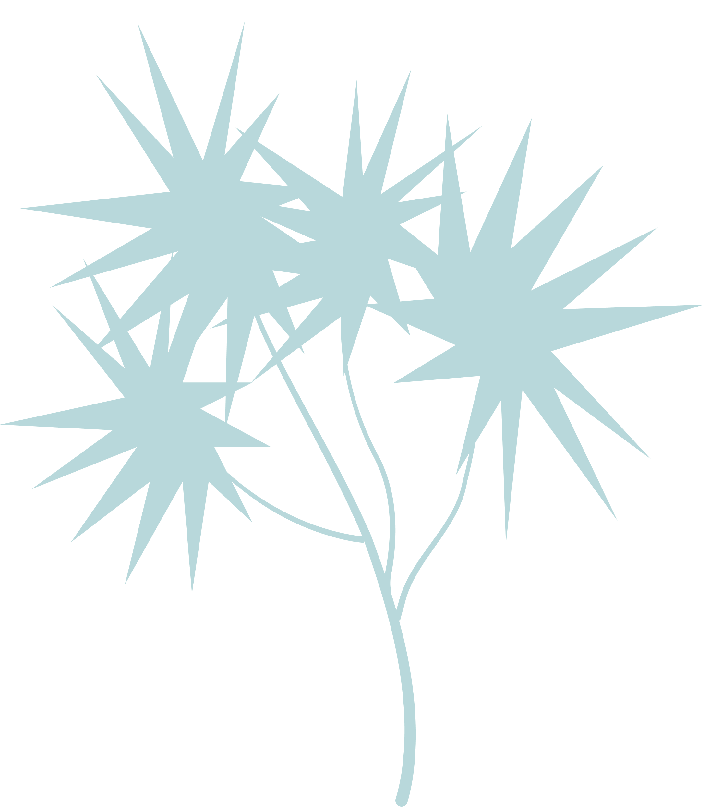
Aligned with the New Zealand Government's Disabilities Strategy, this project developed the Accessibility Support Hub to organise fragmented court support information into a clear, inclusive digital experience.
The work streamlined how users find and request support services, creating a scalable information architecture that allows the new hub to merge smoothly with the current website. Through collaborative stakeholder workshops and data-driven usability testing, the project delivered a resilient design system and a repeatable framework.
Screencast
A short walkthrough of the Accessibility Support Hub prototype and support pathway experience.
Background
In support of the New Zealand Government's Disabilities Strategy, this project worked with the Ministry of Justice to create an Accessibility Support Hub.
The goal was to take scattered accessibility information and turn it into a clear, inclusive digital experience that helps users find and request court support services easily.
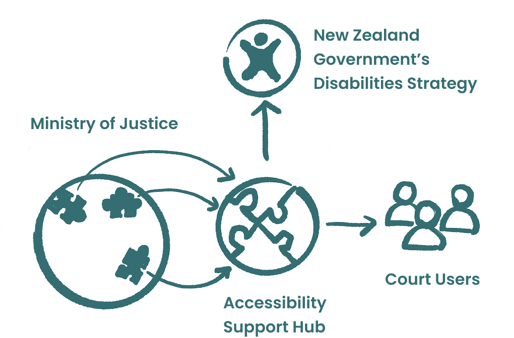
Problem
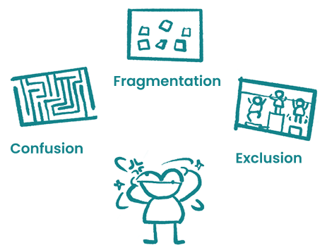
Solution
The solution centralises accessibility services and uses "finding information" and "requesting services" as repeatable templates. The hub sits within the court area of the main site while keeping a clear connection to related pages.
In this project, I wore two hats: Project Manager and UX Designer.
I managed the schedule, led weekly meetings with the Ministry of Justice, and facilitated workshops to keep the project aligned.
I built the roadmap, contributed to research, developed the interpreter service blueprint, designed the information architecture, and created prototypes for the wheelchair access flow.
The project used the Double Diamond framework as a base, while keeping the roadmap flexible enough to respond to research findings and stakeholder feedback.
Research, workshops and field survey.
Evaluation, prioritisation and scope alignment.
Information architecture, prototype flows and design system work.
High-fidelity prototype and documentation.
Impacts
Led the development of the service blueprint and facilitated the workshop.
Designed the evaluation framework, led the workshop, and aligned the project scope.
Restructured the relationship between new and existing accessibility content.
Used severity rating and Clarity testing to create a prioritised design backlog.
Visited Wellington High Court to improve the accuracy of plain-language UX writing.
Updated related pages and designed wheelchair access pages from wireframes to high-fidelity prototypes.
I mapped out the Ministry's current service flow for interpreter requests, covering both internal staff processes and the external website experience.
To ensure accuracy, I co-facilitated a workshop with Ministry of Justice staff to validate the service flow and identify real-world pain points.
This filled a blank in the Ministry's documentation. It also helped us see the service as a whole system, where changing a small visible touchpoint affects everything beneath it.
After research, the team realised the problems were connected across the whole system. With limited time and resources, the project needed a clear way to prioritise.
I designed a scoring framework based on control, capability, impact, and value. Both teams scored and merged results, placing problems on a feasibility-benefit quadrant.
This workshop narrowed the focus, improved how resources were used, and gave the Ministry a repeatable decision-making method.
The challenge was to link new pages with old ones without breaking the existing site.
It is like adding a modern bathroom centre to an old apartment building. People still enter through the old building, but each room now has a path into the new centre. Over time, both systems can merge.
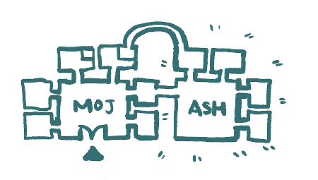
This solved the problem of old and new pages existing at the same time and created a path for the website's long-term growth. It also supported high-fidelity prototyping.
To turn test results into clear actions, I introduced NN/g's severity rating method and Microsoft Clarity for behavioural analysis.
Findings were turned into issues and scored by frequency, impact, and persistence. These scores formed a prioritised design backlog.
For the wheelchair access flow, screen recordings alone were not enough, so I moved the Figma prototype into Framer and embedded Clarity tracking.
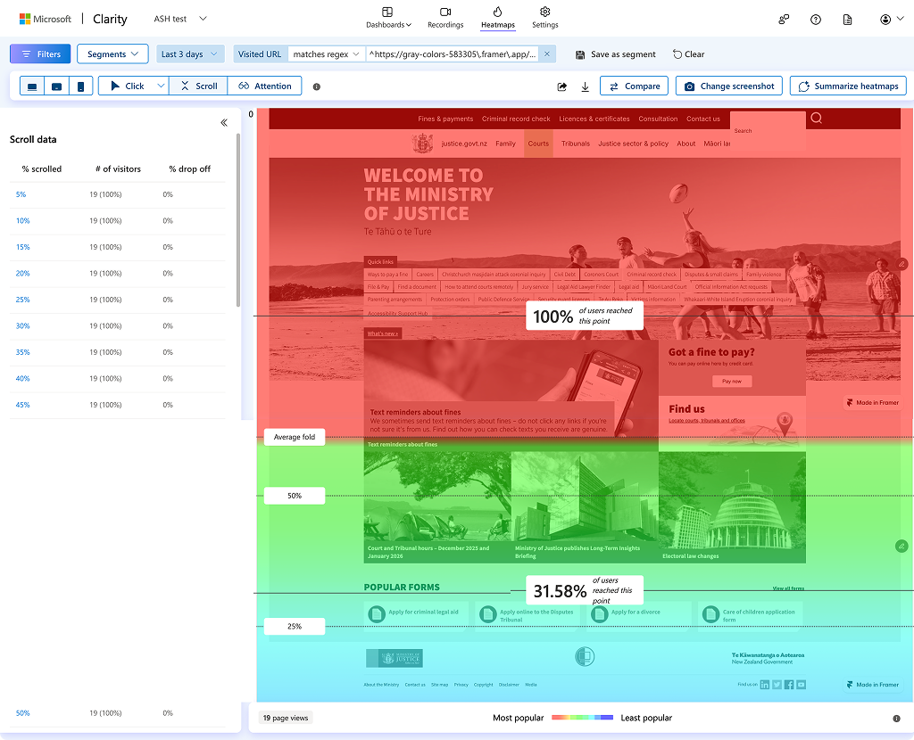
Final Design
The final design focused on making users feel supported and confident, reducing the mental effort required to find help through familiar patterns and clear guidance.
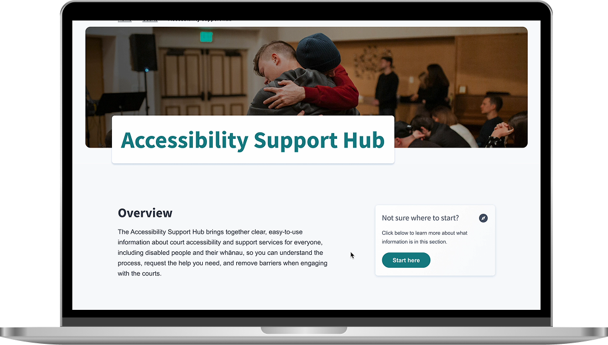
Key Feature
Users should never feel stuck on a page. Related accessibility content is linked using lightweight tiles, clear text, and consistent button styles.
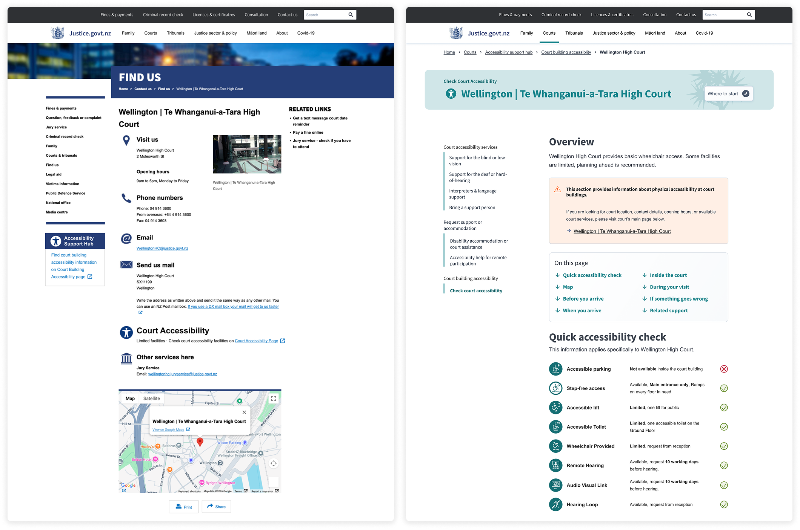
Key Feature
Most users start with search on public service sites. The search result pattern helps common keywords lead to structured, easy-to-read results.
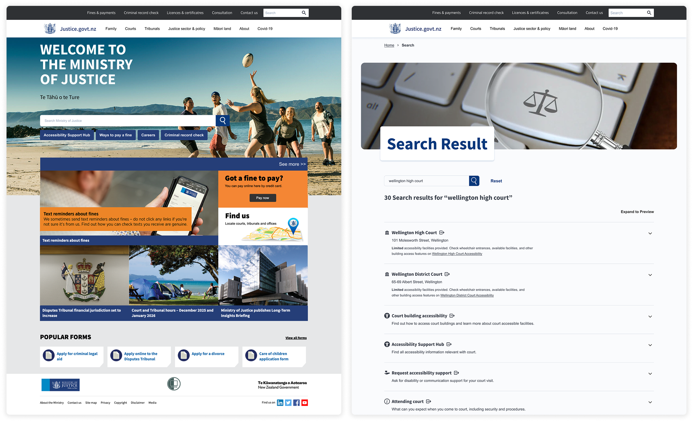
Key Feature
The interface uses progressive disclosure, starting with simple titles and icons, then adding detail as user intent becomes clearer.
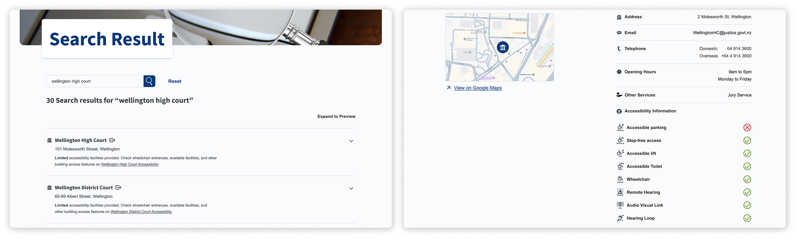
Key Feature
Court visit information follows a time-based journey, from site maps to floor plans, matching real-world expectations before a court visit.
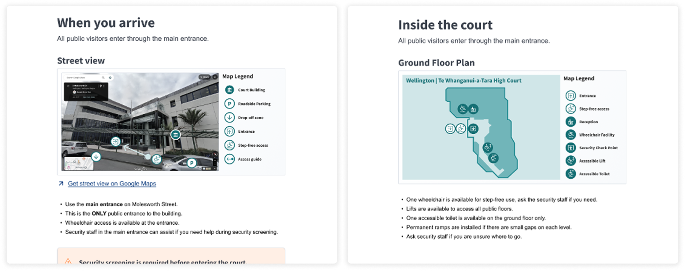
Design System
Based on the Care of Children system, I led the creation of the design system, including brand direction, colour guidance, map legends, icon sets, and accessibility compliance.
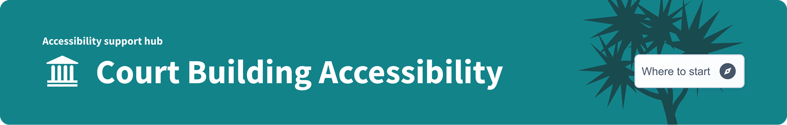
Cabbage Green signals guidance and navigation. Care Pink expresses warmth and support. MoJ Blue is maintained for universal components.
I designed a comprehensive set of icons for accessibility services, court facilities, and map legends.
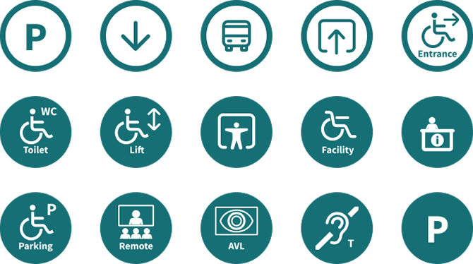
Main body text meets AAA contrast standards, while supporting text meets at least AA standards.
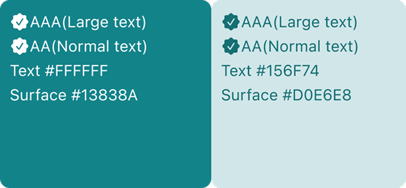
Retrospective
This capstone project delivered a complete, reusable way of working across management, decision-making, research, and design.
The biggest takeaway was learning to be goal-oriented rather than task-oriented, doing less and enough, but doing it right.
Primary recipe R15 · Clarity & Accessibility Audit Perception × Empathy × Interface
This project uses R15 to connect how people understand support information, how the service recognises access needs, and how the interface turns repeated barriers into clearer pathways.
Related Projects
 Digital Systems
New World Design System
A design system case focused on reusable UI structure.
Digital Systems
New World Design System
A design system case focused on reusable UI structure.
 Service Systems
Victim Hub
A public sector service improvement case.
Service Systems
Victim Hub
A public sector service improvement case.
 Digital Systems
Studier
A dashboard project for research task and response management.
Digital Systems
Studier
A dashboard project for research task and response management.
 Spatial Systems
Guangzhou Baiyun T2
An architecture case for complex spatial delivery.
Spatial Systems
Guangzhou Baiyun T2
An architecture case for complex spatial delivery.